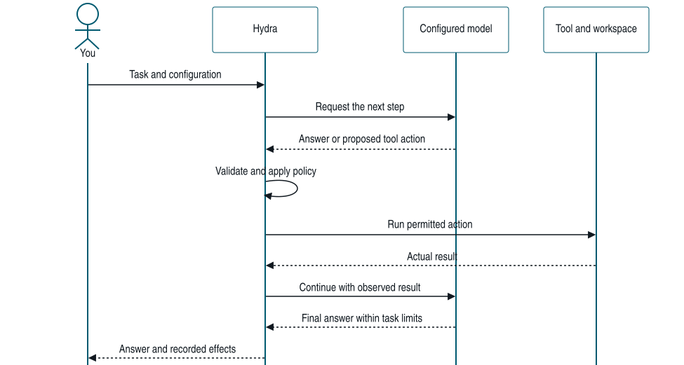

03 / CODING & OPERATIONS · HYDRAAGENT
How HydraAgent works
A plain-English guide for anyone, engineer or not: what Hydra needs, what each placeholder means, how a request travels, and what happens when a model says no.
Updated November 25, 2026. See the merged VM-installation work and its checks, or follow model selection, tool policy and evidence.
What Hydra is
Hydra is a helper you run in a terminal, the text window where you type commands. Give it a folder of code and a goal, such as “explain how login works” or “fix the failing test”. It reads files, asks your chosen model for the next step, applies your configured approval policy, and records what happened. You can require a prompt, allow a task explicitly, or deny changes.
Public Hydra stands alone. You supply its model connection and workspace. It does not need the private BACKS platform. The BACKS-connected Hydra peer is a separate private deployment, as is CuzzoClaw. This guide describes the public agent.
Hydra does not contain an AI model. It can use a model running on your computer or a cloud provider you configure. Installing Hydra also does not install a large-model inference engine, download model weights, or make a model fit your hardware.

What you need
Required
| What | Why |
|---|---|
| Python 3.11 or newer | Hydra is written in Python. Its supported runtime starts here. |
| An isolated Python environment | Use pipx for the quickstart or a virtual environment for the VM installation. This separates Python dependencies; operating-system sandboxing is a separate feature. |
| One configured model source | Use local Ollama, a supported cloud provider with your own credentials, or the supported Codex CLI sign-in path. hydra setup provides configuration help. A model name in a file is not proof that the model is installed or available. |
Optional
| What | What it adds |
|---|---|
| Ollama | Runs downloaded models on your own computer. Local inference can work offline once the needed model is present. Configured cloud routes and network tools still need a connection. |
| A GPU | Can accelerate compatible local models. The selected model still has to fit the available hardware. |
| A cloud model key | Access to your configured provider. Provider files default to ~/.hydraAgent/workspace/; keep key-bearing files outside source control. |
| Bubblewrap | Linux process isolation for checks that require an operating-system sandbox. |
| Telegram | A phone interface to your own Hydra installation. |
| MCP | Tool connections you configure for your task. |
| Memory embeddings | Search past notes by meaning as well as exact words. |

Placeholders: values you supply
Angle brackets mark a value to replace, such as <your-model>. Replace the brackets too. Examples should help you configure your own machine without publishing anyone’s address or key.
| Placeholder | Meaning | Where it belongs |
|---|---|---|
<your-model> | A model you have installed or can access. | Your model selection in setup or the command line. |
<provider>, <model>, <family> | A supported provider, a model name and its family for a configured role. | Your local role configuration, based on the repository’s example. |
<base-url>, <key-env> | Your selected model endpoint and the name of its key setting. | The relevant provider configuration. A key-setting name is not the secret value. |
<workspace> | The folder where you want Hydra to work. | Your task’s working directory and policy settings. |
Use the current quickstart for exact commands. HYDRA_ENV_DIR can change where provider files are read. Keep that location outside your repository when it contains keys.
A request, step by step
Your task and provider configuration enter Hydra together. The model can answer directly or propose a tool action. Hydra validates that proposal and applies its policy before a tool runs. The tool’s actual result returns to the task loop; the model then continues within the configured limits.

Models, decisions and tools
A role describes a job, such as planning or building. A configured provider and model perform that job. A typed decision is a narrower request with a defined answer format: choose an option, classify a request, or propose tool arguments.
| Part | Responsibility | What it does not establish |
|---|---|---|
| Model selection | Use the public agent’s own configured provider and model. | A configuration entry alone does not prove availability or successful inference. |
| Typed decision | Ask an applicable configured local or direct cloud route and return its result to the caller. | A successful call does not prove the reply matches the requested format or grant permission to act. |
| Tool policy and execution | Validate an action, apply your policy, run the permitted tool and retain its real result. | A model’s statement that it changed a file is not a file receipt. |

The general decision transport can return text without enforcing the caller’s complete answer format. The caller must check what it needs; narrower tools can impose their own contracts. Tool arguments and policy are checked at the execution boundary. Check the actual provider, result and final task outcome instead of treating a successful request as proof of all three.
The standalone boundary correction and VM proof record the exact changes and acceptance status. The private platform’s routing architecture has its own research discussion.
When a model or tool fails
A model request can fail because credentials are refused, a model is missing, a service is busy, or the request times out. A tool can also fail after the model has answered. Those are different failures, and the record needs to keep the difference.

A final answer is only one part of acceptance. A file task also needs the expected bytes on disk; a recovery claim needs the separate undo operation to succeed. The VM evidence below distinguishes those outcomes.
What the November VM work proves
Hydra pull request #67 merged on November 25, 2026, Eastern time. The merged source tree matches the tested candidate. The changes close first-run configuration defects, strengthen workspace and approval boundaries, preserve native execution receipts, and make file changes recoverable through real undo.
| Check | Observed result | Scope |
|---|---|---|
| Full Python suite | 3,858 passed; 19 skipped | The frozen candidate’s local suite. Linux, macOS and Windows CI also passed on Python 3.11 and 3.12. |
| Installed package on Ubuntu VMs | 18 verifier checks per Python job, with required sandbox isolation | Fresh wheel installation, real CLI processes, edit, verification, memory, undo, denial and failure behavior. Model replies are scripted fixtures. |
| A real local model | A 4B model wrote and read the requested file; a separate undo command removed it | One installed-wheel run on a CPU-only Linux host, about 217 seconds for the ask. This was a separate host check, not a model test inside the CI VM. |
The VM path and the model path answer different questions. The VM check establishes installation and execution boundaries. The real-model run establishes that one specific model completed one task through those tools. Neither proves every model, remote integration or operator machine works.
Install and verify on a VM · Candidate CI and downloadable VM receipts · Changes, model-run evidence and review record.
Read more
The repository has a companion guide for standalone setup and completion: How Hydra works (plain English). To install, start with the Quickstart.